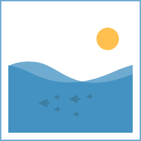
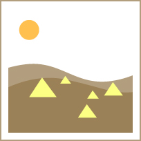
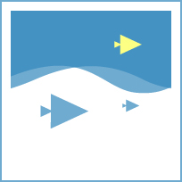

My Milestone
一日一里程
与作品集和简历区分，
这是我生命中的一些重要的学习轨迹。
虽然不是每一件都很辉煌，但是每一件事情，其实对我而言，都有着非常重要的意义，也算是对现在阶段的一个总结。

2010-2013 武汉大学青年传媒集团前端设计部部长
学会管理交流， 培训部委，带领团队。
在校的经历，让我对设计的道路越来越清晰明确。

2012.8 赴库布齐沙漠参加设计比赛
徒步穿越沙漠三天。这次的旅行可以说是对设计，对体能的一次终极而残酷的挑战，也让我知道，设计可以带给人斗志与能量。

2012.9-2012.12 赴韩国交流学习
第一次出国XD，了解到文化的差异也加深了对设计责任感的理解。
2013.6-2013.9 海豚浏览器实习生
第一次有机会跟着专业的设计师实习，为海豚浏览器设计了多套皮肤主题。
感谢这次经历，让我第一次开始更加深入地，更加近距离地了解ux设计这个行业。
2014.2-2014.6 Jumpping智能跳绳项目
尝试将工业设计与互联网技术结合，进行实体交互设计的项目，成功众筹。
让我开始意识到，无论是哪一个领域的设计，其实设计的本质都似乎是共通的，而我很需要做的，是将学到的东西提炼与融合。
2014.7 进入墨尔本Monash大学学习交互设计
在那之后对交互设计有了更加深入的认识，也开始跨学科地学习其他技术，而不仅仅局限于视觉层次的设计。
刚开始学习代码时觉得很痛苦，但现在也通过努力，认识到编程的力量。
2015.7 于澳洲基隆DESTECH2015国际技术会议上发表研究成果
这次的论文发表让我知道，设计需要系统化地总结与升华，这样才能走向一个比较深入的层次，也告诉我，真正有意义的设计是耐得住时间考验的，是面向未来的。
By Lin
©All Rights Reserved